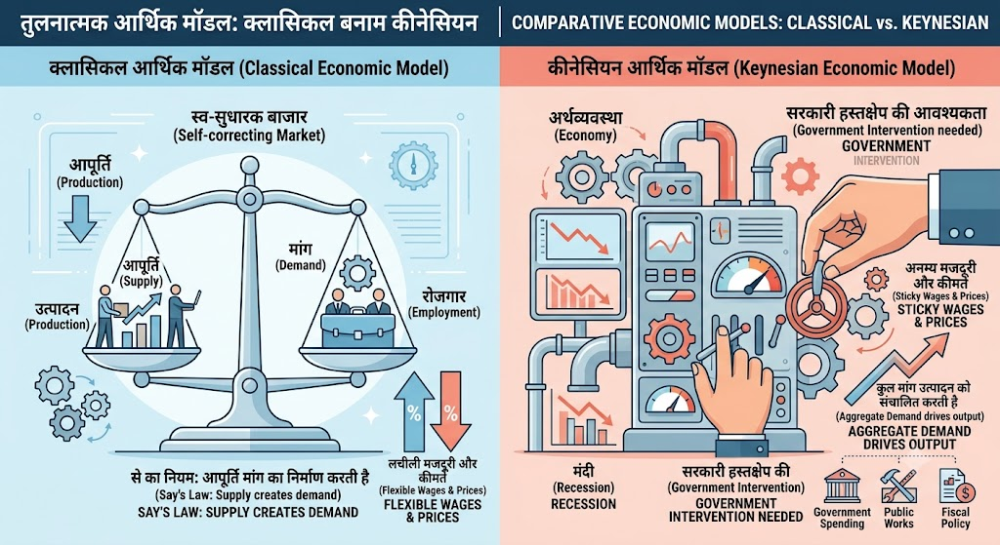

MJC-6 Economics
📖 पुस्तक अध्याय: समष्टि अर्थशास्त्र (Macro-Economics)
🏛️ इकाई-1: बंद अर्थव्यवस्था (Closed Economy)
📊 इकाई परिचय (Unit Introduction)
समष्टि अर्थशास्त्र (Macroeconomics) की यात्रा में आपका स्वागत है!
अभी तक व्यष्टि अर्थशास्त्र (Microeconomics) में आपने देखा कि एक व्यक्ति, एक परिवार या एक कंपनी कैसे निर्णय लेती है। लेकिन जब हम पूरी अर्थव्यवस्था (पूरे देश की अर्थव्यवस्था) की बात करते हैं, तो नियम और सिद्धांत बदल जाते हैं।
इस पहली इकाई में हम "बंद अर्थव्यवस्था" (Closed Economy) का अध्ययन करेंगे। बंद अर्थव्यवस्था का अर्थ है—ऐसी अर्थव्यवस्था जो दुनिया के अन्य देशों के साथ कोई आयात-निर्यात या व्यापार नहीं करती। यद्यपि व्यावहारिक रूप से आज ऐसी अर्थव्यवस्थाएँ नहीं होतीं, लेकिन अर्थशास्त्र के मूल सिद्धांतों को समझने के लिए पहले बंद अर्थव्यवस्था को समझना सबसे आसान और आवश्यक होता है।
इस इकाई में आप मुख्य रूप से दो बड़े स्तंभों को सीखेंगे:
- मैक्रो मॉडल (Macro Models): अर्थव्यवस्था में आय और रोजगार कैसे तय होते हैं? इस पर दो महान विचारधाराएँ हैं—शास्त्रीय (Classical) विचार (जो बाज़ार के स्व-नियंत्रण पर विश्वास रखते हैं) और कीन्ज़ियन (Keynesian) विचार (जो मंदी से उबरने के लिए सरकार के हस्तक्षेप को ज़रूरी मानते हैं)। इसके बाद हम IS-LM मॉडल की मदद से वित्तीय और मौद्रिक नीतियों के प्रभाव को समझेंगे।
- व्यापार चक्र (Business Cycle): अर्थव्यवस्था कभी हमेशा एक जैसी नहीं रहती; इसमें उतार-चढ़ाव आते रहते हैं—कभी तेज़ी (Boom) तो कभी मंदी (Recession)। हम व्यापार चक्र के विभिन्न चरणों और हॉट्रे, कीन्ज़, सैमुअल्सन तथा हिक्स जैसे अर्थशास्त्रियों के सिद्धांतों को पढ़ेंगे।
आइए, अब हम इस इकाई के पहले अध्याय को गहराई से और बहुत आसान भाषा में समझते हैं!
अध्याय 1.1: मैक्रो मॉडल (Macro Models)
1.1.1 शास्त्रीय बनाम कीन्ज़ियन प्रणाली (Classical vs Keynesian System)
1. परिचय (Introduction)
अर्थशास्त्र के इतिहास में दो ऐसी विचारधाराएँ हैं जिन्होंने पूरी दुनिया की आर्थिक नीतियों को दिशा दी है:
- शास्त्रीय (क्लासिकल) अर्थशास्त्र: एडम स्मिथ, डेविड रिकार्डो, और जे.बी. से (J.B. Say) जैसे विद्वानों द्वारा विकसित।
- कीन्ज़ियन अर्थशास्त्र: जॉन मेनार्ड कीन्ज़ (John Maynard Keynes) द्वारा 1936 में अपनी प्रसिद्ध पुस्तक 'The General Theory of Employment, Interest and Money' के माध्यम से लाया गया क्रांतिकारी दृष्टिकोण।
2. शास्त्रीय मॉडल (The Classical System)
मूल अवधारणा (Basic Concept):
क्लासिकल अर्थशास्त्रियों का मानना था कि अर्थव्यवस्था में हमेशा पूर्ण रोजगार (Full Employment) की स्थिति बनी रहती है। यदि कभी थोड़ी देर के लिए बेरोजगारी या मंदी आती भी है, तो बाज़ार की अदृश्य शक्तियां (मांग और पूर्ति) इसे अपने आप ठीक कर देती हैं। सरकार को बाज़ार के काम में कोई दखल (Laissez-faire) नहीं देना चाहिए।
क्लासिकल मॉडल के मुख्य स्तंभ (Key Pillars):
- से का बाज़ार नियम (Say's Law of Markets):
- कथन: "पूर्ति अपनी मांग स्वयं उत्पन्न करती है" (Supply creates its own demand)।
- सरल अर्थ: जब कोई उत्पादक किसी वस्तु का निर्माण करता है, तो वह मजदूरों को मजदूरी, मकान मालिक को किराया और पूंजीपति को ब्याज देता है। यह बांटा गया पैसा ही लोगों की आय बनता है, जिससे वे बाज़ार में वस्तुओं को खरीदते हैं। इसलिए अर्थव्यवस्था में कभी भी अति-उत्पादन (Over-production) या सामान्य बेरोजगारी (General Unemployment) नहीं हो सकती।
- मजदूरी-मूल्य लचीलापन (Wage-Price Flexibility):
- यदि बाज़ार में बेरोजगारी होती है, तो मजदूर कम मजदूरी पर भी काम करने को तैयार हो जाएंगे।
- मजदूरी घटने से उत्पादन लागत कम होगी, कीमतें गिरेंगी, वस्तुओं की मांग बढ़ेगी और सभी बेरोजगारों को फिर से काम मिल जाएगा।
- मुद्रा का परिमाण सिद्धांत (Quantity Theory of Money - QTM):
- मुद्रा केवल विनिमय का माध्यम (Medium of Exchange) है। यह अर्थव्यवस्था में केवल कीमतों के स्तर को प्रभावित करती है, वास्तविक उत्पादन या रोजगार को नहीं।
- बचत-निवेश समानता (Savings-Investment Equality):
- बचत () और निवेश () में समानता ब्याज दर (Interest Rate) के लचीलेपन द्वारा स्थापित होती है।
{kind=link}

3. कीन्ज़ियन मॉडल (The Keynesian System)
मूल अवधारणा (Basic Concept):
1929 की "महान मंदी" (The Great Depression) ने क्लासिकल अर्थशास्त्र की पोल खोल दी, क्योंकि बाज़ार खुद-ब-खुद ठीक नहीं हो सका और लाखों लोग वर्षों तक बेरोजगार रहे।
तब जे.एम. कीन्ज़ ने बताया कि अर्थव्यवस्था में स्व-नियंत्रण की क्षमता असीमित नहीं होती। बेरोजगारी का मुख्य कारण प्रभावी मांग की कमी (Lack of Effective Demand) है। मंदी से बाहर निकलने के लिए सरकारी हस्तक्षेप (Government Intervention) अनिवार्य है।
कीन्ज़ियन मॉडल के मुख्य स्तंभ (Key Pillars):
- प्रभावी मांग का सिद्धांत (Principle of Effective Demand):
- आय और रोजगार का स्तर कुल मांग () और कुल पूर्ति () के संतुलन से तय होता है।
- (उपभोग + निवेश + सरकारी खर्च)।
- यदि लोग पैसा बचाकर रख लेंगे और खर्च नहीं करेंगे, तो मांग घटेगी, जिससे उत्पादन रुकेगा और बेरोजगारी फैलेगी।
- चिपचिपी मजदूरी और कीमतें (Sticky Wages and Prices):
- कीन्ज़ ने क्लासिकल विचार का खंडन किया कि मजदूरी आसानी से घटाई जा सकती है। व्यावहारिक जीवन में ट्रेड यूनियन, श्रम कानून और न्यूनतम मजदूरी नियमों के कारण मजदूरी नीचे नहीं गिरती (Wage Rigidity)।
- अल्पकाल पर जोर (Focus on Short-Run):
- कीन्ज़ का प्रसिद्ध कथन था: "दीर्घकाल में हम सब मर चुके होते हैं" (In the long run, we are all dead)। इसलिए हमें तात्कालिक समस्याओं को हल करने के लिए अल्पकालिक सरकारी नीतियों पर ध्यान देना चाहिए।
- तरलता अधिमान सिद्धांत (Liquidity Preference Theory):
- लोग केवल वस्तुएं खरीदने के लिए ही पैसा नहीं रखते, बल्कि आपात स्थिति (Precautionary) और सट्टेबाजी (Speculative) के लिए भी नकद पैसा रखना पसंद करते हैं।

4. शास्त्रीय और कीन्ज़ियन प्रणाली में मुख्य अंतर (Comparison Table)
विद्यार्थियों, परीक्षा में अक्सर इन दोनों का अंतर पूछा जाता है। इसे इस तालिका (Table) से याद रखें:
| आधार (Parameter) | शास्त्रीय प्रणाली (Classical System) | कीन्ज़ियन प्रणाली (Keynesian System) |
|---|---|---|
| 1. समय सीमा (Time Horizon) | दीर्घकाल (Long-Run) पर आधारित। | अल्पकाल (Short-Run) पर आधारित। |
| 2. रोजगार का स्तर | हमेशा पूर्ण रोजगार (Full Employment) की स्थिति। | अल्प-रोजगार संतुलन (Underemployment Equilibrium) संभव है। |
| 3. मुख्य चालक (Key Driver) | पूर्ति (Supply): पूर्ति अपनी मांग खुद बनाती है। | मांग (Demand): प्रभावी मांग उत्पादन और रोजगार तय करती है। |
| 4. कीमत और मजदूरी | पूर्णतः लचीली (Fully Flexible)। | अपरिवर्तनशील/चिपचिपी (Rigid/Sticky)। |
| 5. सरकार की भूमिका | कोई हस्तक्षेप नहीं (Laissez-Faire policy)। | मंदी के समय सक्रिय सरकारी हस्तक्षेप आवश्यक। |
| 6. बचत और निवेश | ब्याज दर द्वारा संतुलित होते हैं। | आय का स्तर () इन्हें संतुलित करता है। |
| 7. मुद्रा की भूमिका | मुद्रा केवल एक आवरण (Veil) या माध्यम है। | मुद्रा एक वास्तविक संपत्ति है जो ब्याज दर और उत्पादन को प्रभावित करती है। |
📝 छात्र के लिए सार/याद रखने योग्य बातें (Summary for Students)
- क्लासिकल सोच = "बाज़ार भगवान है" — सब कुछ अपने आप ठीक हो जाएगा, सरकार दूर रहे।
- कीन्ज़ियन सोच = "सरकार की मदद ज़रूरी है" — जब मंदी आए, तो सरकार को पुल, सड़कें, स्कूल बनाकर लोगों के हाथ में पैसा पहुंचाना चाहिए ताकि मांग बढ़े।
अध्याय 1.1: मैक्रो मॉडल (Macro Models) - जारी...
1.1.2 IS-LM मॉडल और नीतिगत प्रभाव (IS-LM Model & Policy Effects)
1. परिचय (Introduction)
पिछली चर्चा में हमने देखा कि क्लासिकल और कीन्ज़ियन विचारों में क्या अंतर था। लेकिन अर्थशास्त्रियों के सामने एक बड़ी चुनौती थी: वस्तु बाज़ार (Goods Market) और मुद्रा बाज़ार (Money Market) को एक साथ मिलाकर कैसे समझा जाए?
इसी सवाल का जवाब देने के लिए नोबेल पुरस्कार विजेता अर्थशास्त्री जॉन हिक्स (J.R. Hicks) और अल्बिन हैंसन (Alvin Hansen) ने 1937 में IS-LM मॉडल विकसित किया।
सरल शब्दों में याद रखें:
IS-LM मॉडल हमें यह दिखाता है कि ब्याज दर (Interest Rate - ) और राष्ट्रीय आय (National Income - ) मिलकर वस्तु बाज़ार और मुद्रा बाज़ार में एक साथ संतुलन कैसे बनाते हैं।
2. IS वक्र (IS Curve) — वस्तु बाज़ार संतुलन
IS का नाम 'IS' क्यों है?
- I = Investment (निवेश)
- S = Savings (बचत)
IS वक्र वस्तु बाज़ार (Goods Market) के संतुलन को दर्शाता है, जहाँ कुल बचत () हमेशा कुल निवेश () के बराबर होती है।
IS वक्र कैसा दिखता है और क्यों?
- ढाल (Slope): IS वक्र ऊपर से नीचे (Negative Slope) की ओर गिरता है।
- कारण (Reasoning):
- जब ब्याज दर () घटती है, तो व्यवसायियों के लिए लोन लेना सस्ता हो जाता है।
- इससे वे निवेश () बढ़ाते हैं।
- निवेश बढ़ने से देश में उत्पादन, रोजगार और राष्ट्रीय आय () बढ़ती है।
- यानी: कम ब्याज दर = अधिक राष्ट्रीय आय।

3. LM वक्र (LM Curve) — मुद्रा बाज़ार संतुलन
LM का नाम 'LM' क्यों है?
- L = Liquidity Preference (मुद्रा की मांग / नकदी की चाहत)
- M = Money Supply (मुद्रा की पूर्ति)
LM वक्र मुद्रा बाज़ार (Money Market) के संतुलन को दर्शाता है, जहाँ मुद्रा की मांग () और मुद्रा की पूर्ति () बराबर होती हैं।
LM वक्र कैसा दिखता है और क्यों?
- ढाल (Slope): LM वक्र नीचे से ऊपर (Positive Slope) की ओर उठता है।
- कारण (Reasoning):
- जब देश में राष्ट्रीय आय () बढ़ती है, तो लोग खरीदारी करने के लिए जेब में ज्यादा नकद पैसा (मुद्रा) रखना चाहते हैं।
- चूंकि केंद्रीय बैंक (जैसे RBI) मुद्रा की पूर्ति को स्थिर रखता है, इसलिए लोग पैसे उधार लेने की कोशिश करते हैं।
- इससे बाज़ार में ब्याज दर () बढ़ जाती है।
- यानी: अधिक राष्ट्रीय आय = अधिक ब्याज दर।

4. IS-LM सामान्य संतुलन (General Equilibrium)
जब हम IS वक्र (वस्तु बाज़ार) और LM वक्र (मुद्रा बाज़ार) को एक ही ग्राफ में एक साथ बनाते हैं, तो जहाँ वे एक-दूसरे को काटते हैं (Intersect करते हैं), वही पूरी अर्थव्यवस्था का सामान्य संतुलन बिंदु (Equilibrium Point - E) होता है।
इस संतुलन बिंदु E पर हमें एक साथ दो चीज़ें प्राप्त होती हैं:
- संतुलन ब्याज दर ()
- संतुलन आय का स्तर ()

5. IS-LM मॉडल में नीतिगत प्रभाव (Policy Effects in IS-LM)
सरकार और केंद्रीय बैंक अर्थव्यवस्था को नियंत्रित करने के लिए दो मुख्य नीतियाँ बनाते हैं। आइए देखें कि IS-LM मॉडल में इनका क्या प्रभाव पड़ता है:
(A) राजकोषीय नीति (Fiscal Policy - सरकार का निर्णय)
राजकोषीय नीति सरकार के कर (Taxes) और सरकारी खर्च (Government Spending) से संबंधित होती है।
- विस्तारवादी राजकोषीय नीति (Expansive Fiscal Policy):
- जब सरकार सड़कें, पुल बनाने पर सरकारी खर्च बढ़ाती है या टैक्स घटाती है।
- परिणाम: IS वक्र दाहिनी ओर (Rightward) खिसक जाता है ()।
- अंतिम प्रभाव: राष्ट्रीय आय () बढ़ती है, लेकिन ब्याज दर () भी बढ़ जाती है।
- ⚠️ क्राउडिंग-आउट प्रभाव (Crowding-out Effect): ब्याज दर बढ़ने के कारण निजी निवेशक लोन लेना कम कर देते हैं, जिससे सरकारी खर्च का पूरा लाभ नहीं मिल पाता।

(B) मौद्रिक नीति (Monetary Policy - केंद्रीय बैंक/RBI का निर्णय)
मौद्रिक नीति देश के केंद्रीय बैंक द्वारा मुद्रा की पूर्ति (Money Supply) को नियंत्रित करने से संबंधित होती है।
- विस्तारवादी मौद्रिक नीति (Expansive Monetary Policy):
- जब केंद्रीय बैंक बाज़ार में पैसा / मुद्रा की पूर्ति बढ़ाता है (जैसे ब्याज दरें घटाकर या नोट छापकर)।
- परिणाम: LM वक्र दाहिनी/नीचे की ओर (Rightward) खिसक जाता है ()।
- अंतिम प्रभाव: ब्याज दर () घटती है और राष्ट्रीय आय () बढ़ती है।

📊 दोनों नीतियों की तुलना (Comparison Table for Quick Revision)
| नीति (Policy) | लागू करने वाला | मुख्य कदम | IS/LM में बदलाव | आय () पर प्रभाव | ब्याज दर () पर प्रभाव |
|---|---|---|---|---|---|
| राजकोषीय नीति | सरकार | खर्च बढ़ाना / टैक्स घटाना | IS वक्र दाएँ खिसकता है | आय बढ़ती है () | ब्याज दर बढ़ती है () |
| मौद्रिक नीति | केंद्रीय बैंक (RBI) | मुद्रा की पूर्ति बढ़ाना | LM वक्र दाएँ खिसकता है | आय बढ़ती है () | ब्याज दर घटती है () |
📝 छात्र के लिए याद रखने के लिए आसान ट्रिक (Memory Trick)
- IS = Investment & Saving (वस्तु बाज़ार): ढाल नीचे गिरती है। सरकार खर्च बढ़ाएगी तो IS दाएँ भागेगा!
- LM = Liquidity & Money (मुद्रा बाज़ार): ढाल ऊपर चढ़ती है। RBI पैसा बढ़ाएगा तो LM दाएँ भागेगा!
- कमल/सफलता का सूत्र: अगर दोनों नीतियाँ एक साथ काम करें (सरकारी खर्च बढ़े + RBI मुद्रा बढ़ाए), तो देश की आय () सबसे तेजी से बढ़ेगी!
अध्याय 1.2: व्यापार चक्र (Business Cycle)
1.2.1 व्यापार चक्र के चरण (Phases of Business Cycle)
1. व्यापार चक्र क्या है? (What is a Business Cycle?)
किसी भी देश की अर्थव्यवस्था हमेशा एक समान गति से आगे नहीं बढ़ती। कभी बाज़ार में बहुत तेज़ी (Boom) होती है, तो कभी मंदी (Recession) छा जाती है।
सरल परिभाषा: राष्ट्रीय आय, उत्पादन, रोजगार और व्यापारिक गतिविधियों में समय-समय पर आने वाले उतार-चढ़ाव (Fluctuations) को ही व्यापार चक्र (Business Cycle) या आर्थिक चक्र कहा जाता है।
जीवन के उदाहरण से समझें: जैसे हमारे जीवन में सुख और दुख का चक्र चलता रहता है, वैसे ही अर्थव्यवस्था में भी "तेज़ी" और "मंदी" के दौर बारी-बारी से आते-जाते रहते हैं।
2. व्यापार चक्र के 4 मुख्य चरण (4 Phases of Business Cycle)
व्यापार चक्र में मुख्य रूप से 4 चरण होते हैं। ये चरण एक गोल चक्र की तरह क्रम से चलते हैं:
समृद्धि (Expansion / Peak) ➔ मंदी (Recession) ➔ अवसाद/गर्त (Depression / Trough) ➔ पुनरुत्थान (Recovery)आइए, इन चारों चरणों को एक-एक करके आसान भाषा में समझते हैं:
1️⃣ विस्तार / समृद्धि (Expansion / Prosperity / Boom)
यह अर्थव्यवस्था का सबसे सुनहरा और खुशहाल समय होता है।
- क्या होता है? बाज़ार में वस्तुओं की मांग बहुत ज़्यादा होती है।
- लक्षण (Features):
- कारखाने पूरी क्षमता से काम करते हैं, उत्पादन चरम पर होता है।
- लोगों को आसानी से रोजगार मिलता है (बेरोजगारी न के बराबर होती है)।
- वेतन, लाभ और कीमतें बढ़ती हैं।
- बैंक आसानी से और कम ब्याज पर लोन देते हैं, जिससे निवेश (Investment) बहुत तेज़ी से बढ़ता है।
- शीर्ष बिंदु (Peak): जब समृद्धि अपने उच्चतम स्तर पर पहुँच जाती है, तो उसे "शीर्ष" (Peak) कहते हैं। इसके बाद तेज़ी रुकने लगती है।
2️⃣ मंदी (Recession)
शीर्ष (Peak) पर पहुँचने के बाद अर्थव्यवस्था में मोड़ आता है और गिरावट शुरू होती है।
- क्या होता है? बाज़ार में वस्तुएँ महँगी होने के कारण लोग खरीदारी कम कर देते हैं, जिससे मांग घटने लगती है।
- लक्षण (Features):
- बिक्री कम होने से कंपनियों का स्टॉक (मालगोदाम) भरने लगता है।
- मालिक नए ऑर्डर देना बंद कर देते हैं और उत्पादन में कटौती करते हैं।
- कंपनियों से छँटनी (Layoffs) शुरू हो जाती है, जिससे बेरोजगारी बढ़ने लगती है।
- शेयर बाज़ार गिरने लगता है और लोग डर के मारे पैसा बचाना शुरू कर देते हैं।
3️⃣ अवसाद या गर्त (Depression / Trough)
यह व्यापार चक्र का सबसे कठिन और भयानक चरण होता है। (जैसे 1929 की "महान मंदी")।
- क्या होता है? आर्थिक गतिविधियाँ अपने सबसे निचले स्तर पर पहुँच जाती हैं।
- लक्षण (Features):
- बड़े पैमाने पर बेरोजगारी फैल जाती है।
- कई कंपनियाँ और बैंक दिवालिया (Bankrupt) हो जाते हैं।
- लोगों के पास पैसा नहीं होता, इसलिए मांग एकदम गिर जाती है।
- कीमतें और ब्याज दरें बहुत नीचे आ जाती हैं, फिर भी कोई नया निवेश करने की हिम्मत नहीं करता।
- गर्त बिंदु (Trough): गिरावट का जो सबसे निचला धरातल होता है, उसे "गर्त" (Trough) कहते हैं। यहाँ पहुँचकर गिरावट थम जाती है।
4️⃣ पुनरुत्थान / सुधार (Recovery / Revitalisation)
गर्त (Trough) के बाद अर्थव्यवस्था फिर से साँस लेना शुरू करती है और सुधार की ओर बढ़ती है।
- क्या होता है? पुरानी मशीनें खराब होने या सरकार द्वारा राहत पैकेज/खर्च बढ़ाने से बाज़ार में फिर से नई मांग पैदा होती है।
- लक्षण (Features):
- बंद पड़ी दुकानें और कारखाने धीरे-धीरे फिर से खुलने लगते हैं।
- लोगों को फिर से काम मिलने लगता है (रोजगार में सुधार)।
- लोगों की आय बढ़ती है, जिससे वे खरीदारी शुरू करते हैं।
- निवेशकों में उम्मीद जगती है और बाज़ार फिर से विस्तार (Expansion) की ओर बढ़ने लगता है।

- "विस्तार / समृद्धि (Expansion / Boom)" on the upward curve.
- "शीर्ष (Peak)" at the top crest.
- "मंदी (Recession)" on the downward curve.
- "गर्त / अवसाद (Trough / Depression)" at the bottom trough.
- "पुनरुत्थान (Recovery)" on the rising curve back towards the trend.
Use clean dark lines and crisp text on a pure white background. Minimalist textbook style.
📊 चारों चरणों का तुलनात्मक चार्ट (Quick Summary Table)
| चरण (Phase) | मांग (Demand) | उत्पादन (Output) | रोजगार (Employment) | कीमतें (Prices) |
|---|---|---|---|---|
| 1. समृद्धि (Boom) | उच्चतम () | उच्चतम () | पूर्ण रोजगार () | उच्च () |
| 2. मंदी (Recession) | घटने लगती है () | घटने लगता है () | छँटनी शुरू () | स्थिर/स्थगित |
| 3. अवसाद (Depression) | सबसे कम () | सबसे कम () | भारी बेरोजगारी () | अत्यंत कम () |
| 4. पुनरुत्थान (Recovery) | बढ़ने लगती है () | बढ़ने लगता है () | सुधार शुरू () | सामान्य स्थिति |
📝 याद रखने की आसान ट्रिक (Student Memory Tip)
व्यापार चक्र को मौसम चक्र की तरह याद रखें:
- समृद्धि (Boom) = वसंत/गर्मी का मौसम (हर तरफ हरियाली, सब खुश!)
- मंदी (Recession) = पतझड़ का मौसम (पत्ते/नौकरियाँ झड़ने लगती हैं!)
- अवसाद (Depression) = कड़ाके की ठंड (सब कुछ जम गया, बाज़ार ठप!)
- पुनरुत्थान (Recovery) = पहली बारिश (फिर से नई कलियाँ खिलने लगीं!)
अध्याय 1.2: व्यापार चक्र (Business Cycle) - जारी...
1.2.2 व्यापार चक्र के सिद्धांत (Theories of Business Cycle)
1. परिचय (Introduction)
पिछले भाग में हमने देखा कि अर्थव्यवस्था में "तेज़ी" (Boom) और "मंदी" (Recession) के चक्र आते रहते हैं। लेकिन सवाल यह उठता है कि ये चक्र आते क्यों हैं?
अलग-अलग अर्थशास्त्रियों ने इसके अलग-अलग कारण बताए हैं। आपके पाठ्यक्रम (Syllabus) में 4 प्रमुख अर्थशास्त्रियों के सिद्धांत शामिल हैं:
- हॉट्रे का मौद्रिक सिद्धांत (Hawtrey's Monetary Theory)
- कीन्ज़ का निवेश/प्रभावी मांग सिद्धांत (Keynes's Theory)
- सैमुअल्सन का गुणक-त्वरक अंतःक्रिया सिद्धांत (Samuelson's Multiplier-Accelerator Model)
- हिक्स का व्यापार चक्र सिद्धांत (Hicks's Theory)
आइए, इन चारों सिद्धांतों को बहुत ही सरल भाषा में समझते हैं ताकि परीक्षा में आप इन्हें बिना किसी कठिनाई के लिख सकें।
1️⃣ आर.जी. हॉट्रे का शुद्ध मौद्रिक सिद्धांत (Hawtrey's Purely Monetary Theory)
मुख्य विचार:
हॉट्रे (R.G. Hawtrey) का मानना था कि व्यापार चक्र पूर्णतः एक मौद्रिक घटना (Purely Monetary Phenomenon) है। यानी बाज़ार में तेज़ी और मंदी केवल बैंक क्रेडिट (ऋण/लोन) के घटने-बढ़ने से आती है।
चक्र कैसे काम करता है?
- तेज़ी की शुरुआत (Expansion Phase):
- जब बैंक अपनी ब्याज दरें कम करते हैं, तो व्यापारी (Wholesalers) आसानी से बैंक से क्रेडिट (लोन) ले लेते हैं।
- लोन का पैसा मिलते ही व्यापारी उत्पादकों (Manufacturers) को माल का बड़ा ऑर्डर देते हैं।
- ऑर्डर पूरा करने के लिए कारखाने अधिक मजदूरों को काम पर रखते हैं ➔ लोगों की आय बढ़ती है ➔ बाज़ार में मांग और कीमतें बढ़ती हैं ➔ तेज़ी (Boom) आ जाती है।
- मंदी की शुरुआत (Contraction Phase):
- जब बाज़ार में तेज़ी बहुत बढ़ जाती है, तो बैंकों के पास नकद भंडार कम होने लगता है।
- बैंक डरकर ब्याज दरें बढ़ा देते हैं और लोन देना कम कर देते हैं।
- ऊँची ब्याज दरों के कारण व्यापारी नए ऑर्डर देना बंद कर देते हैं और मौजूदा स्टॉक बेचने लगते हैं।
- उत्पादन घटता है, छँटनी होती है और बाज़ार मंदी (Recession) में चला जाता है।
याद रखने की कुंजी: हॉट्रे = बैंक क्रेडिट और ब्याज दर का खेल।

2️⃣ जे.एम. कीन्ज़ का सिद्धांत (Keynes's Theory of Business Cycle)
मुख्य विचार:
कीन्ज़ (J.M. Keynes) के अनुसार, व्यापार चक्र का मुख्य कारण निवेश (Investment) में उतार-चढ़ाव है। और यह निवेश किस पर निर्भर करता है? "पूँजी की सीमांत कार्यकुशलता" (Marginal Efficiency of Capital - MEC) यानी भविष्य में मिलने वाले संभावित लाभ की उम्मीद पर!
चक्र कैसे काम करता है?
- समृद्धि (Boom):
- जब व्यापारियों को लगता है कि भविष्य में बहुत लाभ होने वाला है (उच्च MEC), तो वे भारी निवेश (Investment) करते हैं।
- निवेश बढ़ने से गुणक (Multiplier) के प्रभाव से राष्ट्रीय आय और रोजगार कई गुना बढ़ता है।
- मंदी की शुरुआत (Crisis & Depression):
- एक सीमा के बाद बाज़ार में माल की आपूर्ति बहुत ज़्यादा हो जाती है।
- अचानक निवेशकों का विश्वास डगमगा जाता है और उन्हें लगता है कि अब लाभ नहीं होगा (MEC अचानक गिर जाता है)।
- कीन्ज़ इसे "उद्यमियों का मनोवैज्ञानिक पतन" (Psychological collapse of business confidence) कहते हैं।
- लोग पैसा निवेश करने के बजाय अपने पास नकद रखना पसंद करते हैं (Liquidity Preference)। निवेश रुकते ही बाज़ार मंदी में चला जाता है।
याद रखने की कुंजी: कीन्ज़ = MEC (लाभ की उम्मीद) + निवेश में उतार-चढ़ाव।
3️⃣ पॉल सैमुअल्सन का गुणक-त्वरक मॉडल (Samuelson's Multiplier-Accelerator Interaction)
मुख्य विचार:
पॉल सैमुअल्सन (Paul Samuelson) ने बताया कि केवल गुणक (Multiplier) या केवल त्वरक (Accelerator) व्यापार चक्र पैदा नहीं कर सकते। व्यापार चक्र तब बनता है जब गुणक और त्वरक एक-दूसरे के साथ मिलकर काम करते हैं (Interaction)।
ये दोनों क्या हैं?
- गुणक (Multiplier): निवेश बढ़ने से आय कितनी बढ़ती है।
- त्वरक (Accelerator): उपभोग/मांग बढ़ने से नया निवेश कितना बढ़ता है।
चक्र कैसे काम करता है?
- शुरुआती धक्का: जब सरकार या निजी क्षेत्र थोड़ा सा स्वायत्त निवेश (Autonomus Investment) करता है, तो गुणक के कारण लोगों की आय बढ़ती है।
- त्वरक की एंट्री: आय बढ़ने से लोग खरीदारी (उपभोग) बढ़ाते हैं। इस बढ़ी हुई मांग को पूरा करने के लिए कंपनियाँ नई मशीनें और कारखाने लगाती हैं — इसे त्वरक (Accelerator) कहते हैं।
- सुपर-मल्टीप्लायर प्रभाव: गुणक और त्वरक एक-दूसरे को ताकत देते हैं और अर्थव्यवस्था रॉकेट की तरह ऊपर जाती है (Boom)।
- अवरोध: लेकिन संसाधन सीमित होने के कारण विकास एक सीमा पर रुक जाता है। जैसे ही उपभोग की गति धीमी होती है, त्वरक उलटा काम करने लगता है और अर्थव्यवस्था उतनी ही तेज़ी से नीचे गिरती है (Depression)।
याद रखने की कुंजी: सैमुअल्सन = गुणक (Multiplier) त्वरक (Accelerator)।

4️⃣ जे.आर. हिक्स का सिद्धांत (Hicks's Theory of Business Cycle)
मुख्य विचार:
जे.आर. हिक्स (J.R. Hicks) ने सैमुअल्सन के मॉडल को और अधिक व्यावहारिक बनाया। हिक्स ने कहा कि व्यापार चक्र अनियंत्रित होकर आसमान में नहीं उड़ सकता और न ही पाताल में गिर सकता है। इसकी दो सीमाएँ होती हैं:
- ऊपरी सीमा (Ceiling / Roof)
- निचली सीमा (Floor / Bottom)
हिक्स का मॉडल (Ceiling and Floor Model):
- ऊपरी छत (Ceiling - पूर्ण रोजगार सीमा):
- जब गुणक और त्वरक मिलकर अर्थव्यवस्था को ऊपर ले जाते हैं, तो यह "छत" (Ceiling) से टकरा जाती है।
- यह छत क्या है? पूर्ण रोजगार (Full Employment) का स्तर! जब देश के सारे मजदूर और साधन काम पर लग चुके हैं, तो उत्पादन इससे ऊपर नहीं जा सकता। टकराकर अर्थव्यवस्था वापस नीचे मुड़ जाती है।
- निचली ज़मीन (Floor - स्वायत्त निवेश सीमा):
- मंदी में जब अर्थव्यवस्था नीचे गिरती है, तो यह "ज़मीन" (Floor) से टकराकर रुक जाती है।
- यह ज़मीन क्या है? स्वायत्त निवेश (Autonomous Investment)। सरकार और समाज को जीवित रहने के लिए सड़क, भोजन, स्वास्थ्य पर न्यूनतम खर्च करना ही पड़ता है। यह खर्च अर्थव्यवस्था को शून्य होने से बचा लेता है और यहाँ से फिर पुनरुत्थान (Recovery) शुरू होता है।
याद रखने की कुंजी: हिक्स = छत (Ceiling = पूर्ण रोजगार) और ज़मीन (Floor = स्वायत्त निवेश)।

📊 चारों सिद्धांतों का त्वरित तुलनात्मक चार्ट (Quick Summary Table)
| अर्थशास्त्री (Economist) | सिद्धांत का नाम | मुख्य कारण (Primary Cause) | सबसे खास बात (Key Highlight) |
|---|---|---|---|
| 1. हॉट्रे (Hawtrey) | मौद्रिक सिद्धांत | बैंक क्रेडिट और ब्याज दर | व्यापार चक्र 100% केवल मुद्रा/ऋण का खेल है। |
| 2. कीन्ज़ (Keynes) | निवेश/प्रभावी मांग सिद्धांत | MEC (पूँजी की सीमांत कार्यकुशलता) | मंदी निवेशकों की निराशा/निराशाजनक सोच से आती है। |
| 3. सैमुअल्सन (Samuelson) | गुणक-त्वरक अंतःक्रिया | गुणक और त्वरक का संयुक्त प्रभाव | दोनों मिलकर विकास की गति को कई गुना बढ़ा देते हैं। |
| 4. हिक्स (Hicks) | छत और ज़मीन का मॉडल | गुणक-त्वरक + सीमाएँ | चक्र पूर्ण रोजगार (Ceiling) और स्वायत्त निवेश (Floor) के बीच ही घूमता है। |
📝 छात्र के लिए परीक्षा टिप (Exam Tip)
- अगर परीक्षा में प्रश्न "व्यापार चक्र के सिद्धांतों की समीक्षा करें" आता है, तो उत्तर की शुरुआत हॉट्रे (केवल मुद्रा) से करें, फिर कीन्ज़ (निवेश), उसके बाद सैमुअल्सन (गुणक+त्वरक) और अंत में हिक्स (छत और ज़मीन) पर समाप्त करें। यह एक एकदम सटीक और वैज्ञानिक क्रम माना जाता है!
🏛️ इकाई-2: मुद्रास्फीति और बेरोजगारी (Inflation & Unemployment)
अध्याय 2.1: मुद्रास्फीति (Inflation)
2.1.1 प्रकार, कारण और फिशर प्रभाव (Types, Causes & Fisher Effect)
1. मुद्रास्फीति क्या है? (What is Inflation?)
सामान्य भाषा में हम मुद्रास्फीति को "महँगाई" कहते हैं। लेकिन अर्थशास्त्र में इसका एक निश्चित अर्थ होता है।
सरल परिभाषा: जब अर्थव्यवस्था में वस्तुओं और सेवाओं की सामान्य कीमत स्तर (General Price Level) में सतत और लगातार वृद्धि होती है, और मुद्रा (रुपये) की क्रय शक्ति (Purchasing Power) घटने लगती है, तो इस स्थिति को मुद्रास्फीति (Inflation) कहते हैं।
सरल उदाहरण: यदि आज आप ₹100 में 2 किलो सेब खरीद पाते हैं, और एक साल बाद उसी ₹100 में केवल 1.5 किलो सेब ही मिलते हैं, तो इसका मतलब है कि पैसे की ताकत कम हो गई है और महँगाई बढ़ गई है।
2. मुद्रास्फीति के प्रकार (Types of Inflation)
मुद्रास्फीति को अलग-अलग आधारों पर बाँटा जाता है। परीक्षा की दृष्टि से मुख्य प्रकार नीचे दिए गए हैं:
(A) गति या दर के आधार पर (Based on Speed):
- रेंगती हुई मुद्रास्फीति (Creeping Inflation):
- जब महँगाई की दर बहुत धीमी यानी 3% या उससे कम प्रतिवर्ष होती है।
- यह अर्थव्यवस्था के स्वास्थ्य के लिए अच्छी मानी जाती है क्योंकि इससे उत्पादकों को प्रोत्साहन मिलता है।
- टहलती/चलती मुद्रास्फीति (Walking/Trotting Inflation):
- जब दर 3% से 10% के बीच होती है। यह सरकार के लिए चेतावनी का संकेत होता है।
- दौड़ती हुई मुद्रास्फीति (Running Inflation):
- जब महँगाई दर 10% से 20% प्रतिवर्ष हो जाती है। यह आम जनता के बजट को बिगाड़ देती है।
- अति-मुद्रास्फीति / हाइपर-इन्फ्लेशन (Hyperinflation / Galloping Inflation):
- जब महँगाई की दर अनियंत्रित होकर तीनों अंकों (100% या उससे अधिक) में पहुँच जाती है।
- (जैसे ज़िम्बाब्वे या वेनेज़ुएला में हुआ था, जहाँ लोग सामान खरीदने के लिए बोरियों में भरकर पैसे ले जाते थे)।
(B) कारणों के आधार पर (Based on Causes) — बहुत महत्वपूर्ण!
- मांग-प्रेरित मुद्रास्फीति (Demand-Pull Inflation):
- जब बाज़ार में वस्तुओं की मांग (Demand) उनकी पूर्ति (Supply) की तुलना में बहुत ज़्यादा हो जाती है।
- "बहुत सारा पैसा, बहुत कम सामान का पीछा कर रहा होता है" (Too much money chasing too few goods)।
- लागत-वृद्धि मुद्रास्फीति (Cost-Push Inflation):
- जब कच्चे माल, मजदूरी, बिजली या पेट्रोल/डीजल के दाम बढ़ने के कारण उत्पादन लागत (Production Cost) बढ़ जाती है।
- लागत बढ़ने पर कंपनियाँ अपने सामान की कीमतें बढ़ा देती हैं।

3. मुद्रास्फीति के कारण (Causes of Inflation)
मुद्रास्फीति क्यों पैदा होती है? इसे हम दो हिस्सों में समझ सकते हैं:
- मांग बढ़ाने वाले कारक (Demand-Side Factors):
- मुद्रा पूर्ति में वृद्धि (Increase in Money Supply): जब केंद्रीय बैंक (RBI) अधिक नोट छापता है या बैंक सस्ते लोन बाँटते हैं, तो लोगों के पास पैसा बढ़ता है और वे मांग बढ़ाते हैं।
- सरकारी खर्च में वृद्धि (Government Spending): सरकार जब पुल, सड़कें बनाने पर बड़ा खर्च करती है, तो जनता की आय बढ़ती है।
- जनसंख्या वृद्धि: अधिक लोग = अधिक मांग।
- पूर्ति घटाने वाले कारक (Supply-Side Factors):
- कच्चे माल की कमी: जैसे प्राकृतिक आपदा या युद्ध के कारण कृषि उत्पादन या क्रूड ऑयल (कच्चा तेल) का रुक जाना।
- मजदूरी में वृद्धि: लेबर यूनियन द्वारा मजदूरी बढ़ाने का दबाव।
- अप्रत्यक्ष करों में वृद्धि (Indirect Taxes): GST या एक्साइज ड्यूटी बढ़ने से सामान महँगा होना।
4. फिशर प्रभाव (Fisher Effect)
इरविंग फिशर (Irving Fisher) एक प्रसिद्ध अमेरिकी अर्थशास्त्रियों में से एक थे। उन्होंने यह सिद्ध किया कि मुद्रास्फीति (Inflation) और ब्याज दरों (Interest Rates) के बीच सीधा संबंध होता है।
अवधारणा (Concept):
ब्याज दरें दो प्रकार की होती हैं:
- नामित/मौद्रिक ब्याज दर (Nominal Interest Rate - ): वह ब्याज दर जो बैंक आपको कागज़ों पर देता है (जैसे F.D. पर 7%)।
- वास्तविक ब्याज दर (Real Interest Rate - ): महँगाई को घटाने के बाद जो वास्तव में आपकी खरीद क्षमता को बढ़ाता है।
फिशर समीकरण (Fisher Equation):
या सरल शब्दों में:
फिशर प्रभाव का नियम (Fisher Effect Statement):
यदि प्रत्याशित मुद्रास्फीति दर () 1% से बढ़ती है, तो नामित ब्याज दर () भी ठीक 1% से बढ़ जाएगी, ताकि वास्तविक ब्याज दर () अपरिवर्तित रहे।
दैनिक जीवन का उदाहरण:
- मान लीजिए आप बैंक में ₹100 जमा करते हैं। बैंक आपको 7% नामित ब्याज () देता है। 1 साल बाद आपको ₹107 मिलेंगे।
- लेकिन अगर उसी 1 साल में देश में महँगाई 5% () बढ़ गई, तो वास्तव में आपकी वास्तविक कमाई/लाभ केवल ही हुआ!
- इसलिए, यदि महँगाई 5% से बढ़कर 8% हो जाती है, तो बैंक को अपना नामित ब्याज दर बढ़ाकर 10% करना पड़ेगा ताकि आपका वास्तविक लाभ (2%) बना रहे।

📊 मुख्य बिंदुओं का त्वरित सार (Quick Summary Table)
| विषय (Topic) | मुख्य सार (Key Takeaway) |
|---|---|
| मुद्रास्फीति (Inflation) | कीमतों में लगातार वृद्धि + मुद्रा के मूल्य (खरीद क्षमता) में कमी। |
| मांग-प्रेरित (Demand-Pull) | अत्यधिक मांग के कारण उत्पन्न महँगाई ()। |
| लागत-वृद्धि (Cost-Push) | कच्चे माल, मजदूरी या करों के बढ़ने से लागत बढ़ने के कारण महँगाई। |
| फिशर प्रभाव (Fisher Effect) | नामित ब्याज दर = वास्तविक ब्याज दर + मुद्रास्फीति दर ()। |
अध्याय 2.2: बेरोजगारी (Unemployment)
2.2.1 अवधारणा, माप और प्रभाव (Concept, Measurement & Effect)
1. बेरोजगारी की अवधारणा (Concept of Unemployment)
सामान्य बोलचाल में हम हर उस व्यक्ति को "बेरोजगार" कह देते हैं जिसके पास कोई काम नहीं है। लेकिन अर्थशास्त्र में बेरोजगारी (Unemployment) की एक बहुत ही स्पष्ट और वैज्ञानिक परिभाषा है।
अर्थशास्त्रीय परिभाषा: बेरोजगारी वह स्थिति है जिसमें कोई व्यक्ति वर्तमान प्रचलित मजदूरी दर (Prevailing Wage Rate) पर काम करने के लिए इच्छुक (Willing) और सक्षम (Able) है, सक्रिय रूप से काम की तलाश कर रहा है, लेकिन फिर भी उसे कोई रोजगार नहीं मिलता।
💡 श्रम बल (Labor Force) बनाम कार्य बल (Work Force) — परीक्षा के लिए अति महत्वपूर्ण!
बेरोजगारी की सही गणना समझने के लिए इन 3 शब्दों को समझना अनिवार्य है:
- श्रम बल (Labor Force):
- देश की कुल जनसंख्या का वह हिस्सा जो काम करने के योग्य और इच्छुक है (सामान्यतः 15 से 59 वर्ष की आयु वर्ग के लोग)।
- इसमें रोजगार प्राप्त व्यक्ति + बेरोजगार व्यक्ति दोनों शामिल होते हैं।
- ❌ किन्हें बाहर रखा जाता है? बच्चे (15 से कम), बुजुर्ग (60+), विद्यार्थी, गृहणियाँ (जो बाज़ार में काम करने की इच्छुक नहीं हैं), और अस्वस्थ/विकलांग व्यक्ति।
- कार्य बल (Work Force):
- श्रम बल का वह हिस्सा जिसे वास्तव में रोजगार मिला हुआ है।
- बेरोजगारों की संख्या (Unemployed Population):
- \text{बेरोजगारों की संख्या} = \text{श्रम बल (Labor Force)} - \text{कार्य बल (Work Force)}
📂 बेरोजगारी के मुख्य प्रकार (Types of Unemployment)
बेरोजगारी को मुख्यतः दो श्रेणियों में विभाजित किया जाता है:
(A) स्वैच्छिक बनाम अनैच्छिक बेरोजगारी (Voluntary vs Involuntary)
- स्वैच्छिक बेरोजगारी (Voluntary Unemployment): जब कोई व्यक्ति प्रचलित मजदूरी पर काम करने के लिए तैयार ही नहीं होता (जैसे अपनी इच्छा से आराम करना या अधिक मजदूरी की उम्मीद में काम न करना)। इसे अर्थशास्त्र में बेरोजगारी का आधिकारिक आंकड़ा नहीं माना जाता।
- अनैच्छिक बेरोजगारी (Involuntary Unemployment): जब व्यक्ति प्रचलित मजदूरी पर काम करने को पूरी तरह तैयार है, फिर भी उसे काम नहीं मिल रहा। अर्थशास्त्र में इसी की गणना की जाती है।
(B) संरचनात्मक और चक्रीय प्रकार (Structural & Structural Types)
- अदृश्य या प्रच्छन्न बेरोजगारी (Disguised Unemployment):
- जहाँ किसी काम को करने के लिए जितने लोगों की आवश्यकता होती है, उससे अधिक लोग लगे होते हैं।
- यदि अतिरिक्त लोगों को काम से हटा भी दिया जाए, तो कुल उत्पादन पर कोई फर्क नहीं पड़ता। (अर्थात श्रम की सीमांत उत्पादकता शून्य होती है—)।
- उदाहरण: भारत के कृषि क्षेत्र में एक छोटे खेत में पूरे परिवार के 8 लोग काम कर रहे हैं, जबकि काम केवल 3 लोगों का है।
- मौसमी बेरोजगारी (Seasonal Unemployment):
- जब वर्ष के कुछ विशेष महीनों या मौसमों में ही काम मिलता है और बाकी समय काम ठप रहता है।
- उदाहरण: किसानों को बुआई/कटाई के मौसम में काम मिलना, या चीनी मिलों में केवल पेराई के समय रोजगार होना।
- घर्षणात्मक या प्रतिरोधात्मक बेरोजगारी (Frictional Unemployment):
- एक नौकरी छोड़कर दूसरी नौकरी में जाने के बीच की समयावधि में व्यक्ति जितने समय तक बेरोजगार रहता है।
- यह अस्थाई होती है और विकसित देशों में अधिक पाई जाती है।
- संरचनात्मक बेरोजगारी (Structural Unemployment):
- जब अर्थव्यवस्था के ढाँचे में बदलाव आने के कारण मजदूरों के कौशल (Skills) और उपलब्ध नौकरियों की माँग के बीच बेमेल (Mismatch) हो जाता है।
- उदाहरण: टाइपराइटर की जगह कंप्यूटर आने पर कंप्यूटर न जानने वाले टाइपिस्टों का बेरोजगार हो जाना।
- चक्रीय बेरोजगारी (Cyclical Unemployment):
- जब व्यापार चक्र (Business Cycle) में मंदी (Recession) या अवसाद (Depression) आने के कारण कुल माँग घट जाती है और कंपनियाँ छँटनी शुरू कर देती हैं।

2. बेरोजगारी का माप (Measurement of Unemployment)
भारत में राष्ट्रीय सांख्यिकी कार्यालय (NSO), जो पहले NSSO कहलाता था, आवधिक श्रम बल सर्वेक्षण (Periodic Labour Force Survey - PLFS) के माध्यम से बेरोजगारी के आँकड़े एकत्र करता है।
बेरोजगारी की माप मुख्यतः तीन अवधारणाओं (Status) के आधार पर की जाती है:
1️⃣ सामान्य स्थिति बेरोजगारी (Usual Principal Status - UPS)
- समय अवधि: सर्वेक्षण की तारीख से पिछले 365 दिन (1 वर्ष) को देखा जाता है।
- नियम: यदि कोई व्यक्ति वर्ष के अधिकांश समय (183 दिन या उससे अधिक) बिना काम के रहा है और काम की तलाश में था, तो उसे सामान्य स्थिति में बेरोजगार माना जाता है।
- यह दीर्घकालिक और स्थाई बेरोजगारी को मापने का सबसे प्रमुख तरीका है।
2️⃣ वर्तमान साप्ताहिक स्थिति (Current Weekly Status - CWS)
- समय अवधि: सर्वेक्षण की तारीख से पिछले 7 दिन (1 सप्ताह) को देखा जाता है।
- नियम: यदि सर्वेक्षण वाले हफ्ते में व्यक्ति को किसी भी एक दिन कम से कम 1 घंटा भी काम नहीं मिला, तो उसे CWS के तहत बेरोजगार माना जाता है।
- यह अल्पकालिक या मौसमी बेरोजगारी की स्थिति दिखाता है।
3️⃣ वर्तमान दैनिक स्थिति (Current Daily Status - CDS)
- समय अवधि: सर्वेक्षण वाले सप्ताह के प्रत्येक दिन (Hour-by-Hour) की गणना होती है।
- नियम:
- यदि किसी दिन व्यक्ति को 4 घंटे या उससे अधिक काम मिलता है ➔ आधा दिन या पूरा दिन रोजगार माना जाता है।
- यदि 1 घंटे से भी कम काम मिलता है ➔ उस दिन व्यक्ति बेरोजगार माना जाता है।
- यह बेरोजगारी मापने का सबसे सूक्ष्म और सटीक (Most Sensitive) तरीका है, क्योंकि यह आंशिक बेरोजगारी (Underemployment) को भी पकड़ लेता है।
🔢 बेरोजगारी दर की गणना का गणितीय सूत्र (Mathematical Formula)
परीक्षा में न्यूमेरिकल या सूत्र सीधे पूछे जाते हैं:

3. बेरोजगारी के प्रभाव (Effects of Unemployment)
बेरोजगारी केवल एक आर्थिक समस्या नहीं है, बल्कि यह सामाजिक और व्यक्तिगत स्तर पर भी विनाशकारी प्रभाव डालती है। इसके प्रभावों को 3 मुख्य शीर्षकों में बाँटा जा सकता है:
बेरोजगारी के प्रभाव ➔ (A) आर्थिक प्रभाव | (B) सामाजिक प्रभाव | (C) व्यक्तिगत व मनोवैज्ञानिक प्रभाव(A) आर्थिक प्रभाव (Economic Effects):
- मानव संसाधन का अपव्यय (Wastage of Human Resources):
- देश की कार्यशील युवा शक्ति, जो उत्पादन बढ़ा सकती थी, बेकार बैठी रहती है।
- राष्ट्रीय आय और GDP में कमी:
- जब लोग काम नहीं करेंगे, तो उत्पादन नहीं होगा, जिससे देश की GDP विकास दर धीमी हो जाती है।
- पूँजी निर्माण में बाधा (Low Capital Formation):
- आय न होने से बचत (Savings) शून्य हो जाती है, जिससे बैंकों में जमा कम होता है और नए उद्योगों के लिए निवेश घट जाता है।
- सरकारी खजाने पर बोझ:
- सरकार को बेरोजगारों के लिए बेरोजगारी भत्ता, मुफ्त राशन और कल्याणकारी योजनाओं पर खर्च करना पड़ता है, जबकि टैक्स से मिलने वाला राजस्व घट जाता है।
(B) सामाजिक प्रभाव (Social Effects):
- गरीबी और असमानता में वृद्धि:
- लंबे समय तक बेरोजगार रहने से परिवार गरीबी रेखा से नीचे चले जाते हैं, जिससे समाज में अमीर और गरीब की खाई चौड़ी होती है।
- अपराध दर में बढ़ोतरी:
- कहावत है कि "खाली दिमाग शैतान का घर होता है"। युवाओं को जब वैधानिक तरीके से आय नहीं मिलती, तो वे चोरी, डकैती, नशीली दवाओं की तस्करी जैसे अपराधों की ओर भटक जाते हैं।
- सामाजिक अशांति और राजनीतिक अस्थिरता:
- व्यापक बेरोजगारी से सरकार के प्रति जनता में आक्रोश फैलता है, जिससे दंगे, आंदोलन और राजनीतिक अस्थिरता पैदा होती है।
(C) व्यक्तिगत और मनोवैज्ञानिक प्रभाव (Personal & Psychological Effects):
- मानसिक तनाव और अवसाद (Mental Stress & Depression):
- रोजगार न मिलने से व्यक्ति हीनभावना का शिकार हो जाता है, जिससे डिप्रेशन, पारिवारिक कलह और आत्महत्या जैसी दुखद घटनाएँ बढ़ती हैं।
- कौशल का ह्रास (Loss of Skills):
- लंबे समय तक काम से दूर रहने पर व्यक्ति का पुरानी कार्यकुशलता और अनुभव का स्तर कम होने लगता है।
📊 त्वरित पुनरावृत्ति तालिका (Quick Summary Table)
| पहलू (Aspect) | मुख्य बिंदु (Key Highlights) |
|---|---|
| मूल अवधारणा | प्रचलित मजदूरी पर काम करने के इच्छुक और सक्षम व्यक्ति को काम न मिलना। |
| प्रच्छन्न बेरोजगारी | आवश्यकता से अधिक लोग लगे होना; सीमांत उत्पादकता = ()। |
| माप की विधियाँ | UPS (365 दिन - दीर्घकालिक), CWS (7 दिन), CDS (दैनिक घंटे - सबसे सटीक)। |
| गणना सूत्र | |
| प्रमुख प्रभाव | GDP में गिरावट, मानव संसाधन का अपव्यय, गरीबी, और अपराध में वृद्धि। |
अध्याय 2.3: वक्र और अपेक्षाएं (Curves & Expectations)
2.3.1 फिलिप्स वक्र (Phillips Curve)
1. परिचय और इतिहास (Introduction & History)
समष्टि अर्थशास्त्र में मुद्रास्फीति (महँगाई) और बेरोजगारी दो सबसे बड़ी चिंताएँ मानी जाती हैं। लंबे समय तक अर्थशास्त्रियों के मन में यह सवाल था: क्या इन दोनों के बीच कोई संबंध है? क्या सरकार महँगाई को बढ़ाकर बेरोजगारी कम कर सकती है?
इस प्रश्न का उत्तर दिया A.W. फिलिप्स (A.W. Phillips) ने।
1958 में न्यूज़ीलैंड के प्रसिद्ध अर्थशास्त्री ए.डब्ल्यू. फिलिप्स ने ब्रिटेन के 1861 से 1957 तक के 96 वर्षों के आँकड़ों का अध्ययन किया। उन्होंने मौद्रिक मजदूरी दर में परिवर्तन (Wage Inflation) और बेरोजगारी दर (Unemployment Rate) के बीच एक गहरा ऐतिहासिक संबंध खोजा, जिसे आज हम "फिलिप्स वक्र" (Phillips Curve) कहते हैं।
2. फिलिप्स वक्र का मूल सिद्धांत (The Core Theory)
मूल कथन: अल्पकाल (Short-Run) में मुद्रास्फीति की दर (Inflation Rate) और बेरोजगारी की दर (Unemployment Rate) के बीच विपरीत/व्युत्क्रमानुपाती संबंध (Inverse Relationship) होता है।
सरल शब्दों में समझें (Trade-Off):
- यदि सरकार बाज़ार में बेरोजगारी को कम करना चाहती है, तो उसे थोड़ी अधिक मुद्रास्फीति (महँगाई) को सहन करना होगा।
- यदि सरकार महँगाई को कम करना चाहती है, तो बाज़ार में बेरोजगारी बढ़ जाएगी।
अर्थशास्त्री इसे "ट्रेड-ऑफ़" (Trade-off) कहते हैं—यानी एक चीज़ को पाने के लिए दूसरी चीज़ का त्याग करना पड़ता है!
💡 इसके पीछे का तर्क (Economic Logic/Mechanism):
- जब अर्थव्यवस्था में विस्तार होता है, तो कंपनियों को अधिक उत्पादन करने के लिए मजदूरों की ज़रूरत होती है ➔ बेरोजगारी घटती है।
- जब बेरोजगार मजदूरों की संख्या कम होती है, तो मजदूरों और ट्रेड यूनियनों की सौदेबाजी की ताकत (Bargaining Power) बढ़ जाती है ➔ वे अधिक मजदूरी की माँग करते हैं।
- मजदूरों को अधिक मजदूरी देने के कारण कंपनियों की उत्पादन लागत बढ़ती है ➔ कंपनियाँ अपने सामान की कीमतें (Inflation) बढ़ा देती हैं।
- निष्कर्ष: कम बेरोजगारी = अधिक महँगाई!

3. अल्पकालीन बनाम दीर्घकालीन फिलिप्स वक्र (Short-Run vs Long-Run Phillips Curve)
शुरुआत में फिलिप्स वक्र को बहुत बड़ी सफलता माना गया। लेकिन 1970 के दशक में जब दुनिया ने "स्टैगफ्लेशन" (Stagflation = महँगाई + बेरोजगारी दोनों एक साथ बढ़ना) देखा, तो पारंपरिक फिलिप्स वक्र पर सवाल खड़े हो गए।
तब नोबेल पुरस्कार विजेता अर्थशास्त्री मिल्टन फ्रीडमैन (Milton Friedman) और एडमंड फेल्प्स (Edmund Phelps) ने स्पष्ट किया कि फिलिप्स वक्र अल्पकाल और दीर्घकाल में अलग-अलग तरीके से व्यवहार करता है:
1️⃣ अल्पकालीन फिलिप्स वक्र (Short-Run Phillips Curve - SPC)
- अल्पकाल में लोगों की प्रत्याशित मुद्रास्फीति (Expected Inflation) स्थिर रहती है।
- इसलिए अल्पकाल में महँगाई और बेरोजगारी के बीच विपरीत संबंध बना रहता है (वक्र नीचे की ओर गिरता हुआ होता है)।
2️⃣ दीर्घकालीन फिलिप्स वक्र (Long-Run Phillips Curve - LPC)
- दीर्घकाल में लोग समझ जाते हैं कि महँगाई बढ़ चुकी है, इसलिए वे अपनी मजदूरी बढ़ाने की माँग करते हैं। कंपनियाँ मजदूरों को निकालना शुरू कर देती हैं।
- परिणामस्वरूप, बेरोजगारी वापस अपने स्वभाविक स्तर पर आ जाती है, जिसे "बेरोजगारी की प्राकृतिक दर" (Natural Rate of Unemployment - NRU) या NAIRU (Non-Accelerating Inflation Rate of Unemployment) कहते हैं।
- इसलिए दीर्घकाल में फिलिप्स वक्र लंबवत/खड़ा (Vertical Line) हो जाता है!
दीर्घकाल का नियम: दीर्घकाल में महँगाई चाहे 2% हो या 20%, बेरोजगारी दर हमेशा अपनी प्राकृतिक दर () पर ही टिकी रहती है। दीर्घकाल में कोई ट्रेड-ऑफ़ नहीं होता।

4. स्टैगफ्लेशन और फिलिप्स वक्र की विफलता (Stagflation)
1970 के दशक में ओपेक (OPEC) तेल संकट के कारण कच्चे तेल के दाम अचानक बहुत बढ़ गए। इससे स्टैगफ्लेशन (Stagflation) की स्थिति पैदा हो गई:
- Stagflation = Stagnation (आर्थिक सुस्ती/बेरोजगारी) + Inflation (महँगाई)
इस स्थिति में उच्च महँगाई और उच्च बेरोजगारी एक साथ मौजूद थी। इसने साबित कर दिया कि पारंपरिक फिलिप्स वक्र हमेशा सही नहीं होता और सप्लाई-साइड झटकों (Cost-Push Shocks) के कारण फिलिप्स वक्र पूरा का पूरा ऊपर/दाएँ खिसक (Shift) सकता है।
📊 त्वरित पुनरावृत्ति सार (Quick Summary Table)
| समय सीमा (Time Horizon) | वक्र का आकार (Shape of Curve) | महँगाई-बेरोजगारी संबंध (Trade-off) | मुख्य अर्थशास्त्री |
|---|---|---|---|
| अल्पकाल (Short-Run) | नीचे की ओर ढलान वाला (Downward Sloping) | हाँ! विपरीत संबंध (कम बेरोजगारी = अधिक महँगाई)। | ए.डब्ल्यू. फिलिप्स (A.W. Phillips) |
| दीर्घकाल (Long-Run) | पूर्णतः खंभा/लंबवत (Vertical Line) | नहीं! बेरोजगारी प्राकृतिक दर () पर स्थिर रहती है। | मिल्टन फ्रीडमैन व एडमंड फेल्प्स |
📝 छात्र के लिए याद रखने की ट्रिक (Memory Tip)
- अल्पकाल: झुका हुआ वक्र ➔ सरकार के पास विकल्प है कि महँगाई सहकर बेरोजगारी घटा ले।
- दीर्घकाल: सीधा खंभा ➔ प्रकृति का नियम जीतता है! बेरोजगारी अपने प्राकृतिक स्तर पर वापस लौट आती है, चाहे महँगाई कितनी भी हो।
अध्याय 2.3: वक्र और अपेक्षाएं (Curves & Expectations) - जारी...
2.3.2 अनुकूलनकारी और तर्कसंगत अपेक्षाएं (Adaptive & Rational Expectations)
1. परिचय (Introduction)
समष्टि अर्थशास्त्र में "अपेक्षाओं" (Expectations) का बहुत बड़ा महत्व है।
अपेक्षा क्या है? भविष्य में आर्थिक परिस्थितियाँ (जैसे महँगाई, ब्याज दर या सरकारी नीतियाँ) कैसी होंगी, इसके बारे में जनता, व्यवसायियों और निवेशकों द्वारा लगाया गया पूर्वानुमान या अंदाजा (Forecast) ही अपेक्षा (Expectation) कहलाता है।
उदाहरण के लिए: यदि आपको लगता है कि अगले महीने पेट्रोल और राशन 10% महँगा होने वाला है, तो आप आज ही अधिक सामान खरीदकर रख लेंगे या अपने बॉस से मजदूरी बढ़ाने की माँग करेंगे। आपके इस कदम से बाज़ार में महँगाई सचमुच बढ़ जाएगी!
अर्थशास्त्र में अपेक्षाओं को समझाने के लिए दो मुख्य सिद्धांत हैं:
- अनुकूलनकारी अपेक्षाएं (Adaptive Expectations)
- तर्कसंगत अपेक्षाएं (Rational Expectations)
आइए, इन दोनों को एक-एक करके और इनके बीच का अंतर बहुत आसान भाषा में समझते हैं।
2️⃣ अनुकूलनकारी अपेक्षाएं सिद्धांत (Adaptive Expectations Theory)
अवधारणा (Concept):
इस सिद्धांत के अनुसार, लोग भविष्य का अनुमान लगाने के लिए केवल अतीत/भूतकाल (Past Experience) के आँकड़ों और अपनी पुरानी गलतियों पर ध्यान देते हैं।
- प्रतिपादक: इसे मिल्टन फ्रीडमैन (Milton Friedman) और फिलिप केगन (Phillip Cagan) ने लोकप्रिय बनाया।
- सोचने का तरीका: "जैसा अतीत में हुआ था, वैसा ही भविष्य में भी होगा।"
यह कैसे काम करता है? (How it works):
लोग भूतकाल की महँगाई दर को देखते हैं। यदि उनका पुराना अनुमान गलत निकलता है, तो वे उसमें धीरे-धीरे सुधार (Adaptation/Adjustment) करते हैं।
- उदाहरण से समझें:
- मान लीजिए पिछले 3 सालों से महँगाई दर 5% रही है। तो आप अनुमान लगाएँगे कि अगले साल भी महँगाई 5% ही रहेगी।
- लेकिन यदि अगले साल अचानक महँगाई बढ़कर 8% हो जाती है, तो आपका अनुमान गलत साबित हुआ।
- अब आप अगले वर्ष के लिए अपने अनुमान में सुधार करेंगे और कहेंगे—"अच्छा, महँगाई बढ़ रही है, तो अगले साल यह शायद 7% या 8% होगी।"
मुख्य सीमा (Limitation):
- धीमी प्रक्रिया (Lagged Adjustment): लोग अपनी अपेक्षाओं को तुरंत नहीं बदलते, बल्कि काफी समय (Time Lag) लेते हैं।
- सिस्टमैटिक गलती (Systematic Errors): जब तक महँगाई लगातार बढ़ती रहेगी, लोग बार-बार गलत अनुमान लगाते रहेंगे और पीछे छूटते रहेंगे।

3️⃣ तर्कसंगत अपेक्षाएं सिद्धांत (Rational Expectations Theory)
अवधारणा (Concept):
इस सिद्धांत के अनुसार, लोग केवल अतीत को ही नहीं देखते, बल्कि भविष्य का अनुमान लगाने के लिए बाज़ार में उपलब्ध सभी वर्तमान जानकारियों (All Available Information), सरकारी नीतियों और आर्थिक मॉडलों का पूरा इस्तेमाल करते हैं।
- प्रतिपादक: जॉन मुथ (John Muth - 1961) द्वारा विकसित और रॉबर्ट लुकास (Robert Lucas) द्वारा 1970 के दशक में समष्टि अर्थशास्त्र में लागू किया गया (लुकास को इसके लिए नोबेल पुरस्कार भी मिला)।
- सोचने का तरीका: "लोग मूर्ख नहीं हैं, वे उपलब्ध सभी सूचनाओं का बुद्धिमानी से विश्लेषण करते हैं।"
यह कैसे काम करता है? (How it works):
लोग जानते हैं कि सरकार या RBI क्या कदम उठाने वाली है।
- उदाहरण से समझें:
- मान लीजिए केंद्रीय बैंक (RBI) घोषणा करता है कि वह बाज़ार में नोटों की छपाई 10% बढ़ाने जा रहा है।
- अनुकूलनकारी सोच वाला व्यक्ति: वह इंतज़ार करेगा कि जब महँगाई बढ़ेगी तब वह अपनी माँग बदलेगा।
- तर्कसंगत सोच वाला व्यक्ति: वह तुरंत समझ जाएगा कि "RBI नोट छाप रहा है ➔ इसका मतलब है कुछ महीनों में महँगाई 10% निश्चित बढ़ेगी।" इसलिए वह आज ही दुकानदारों से अधिक मजदूरी माँगेगा और वस्तुओं की कीमतें आज ही बढ़ जाएँगी!
नीतिगत अप्रभावकारिता प्रमेय (Policy Ineffectiveness Proposition - PIP):
लुकास और सार्जेंट के अनुसार, चूँकि जनता तर्कसंगत है और सरकार की चालों को पहले से समझ जाती है, इसलिए सरकार की पूर्वानुमानित (Expected) मौद्रिक या राजकोषीय नीतियाँ पूरी तरह निष्प्रभावी साबित होती हैं! सरकार केवल तभी बाज़ार को प्रभावित कर सकती है जब वह जनता को सरप्राइज (Unanticipated Shock) दे।

4. दोनों सिद्धांतों की तुलना (Comparison Table)
परीक्षा में इन दोनों सिद्धांतों के बीच अंतर सबसे ज्यादा पूछा जाता है। इसे इस तालिका से याद रखें:
| तुलना का आधार | अनुकूलनकारी अपेक्षाएं (Adaptive) | तर्कसंगत अपेक्षाएं (Rational) |
|---|---|---|
| 1. मुख्य प्रवर्तक | मिल्टन फ्रीडमैन (Milton Friedman) | जॉन मुथ और रॉबर्ट लुकास (Robert Lucas) |
| 2. सूचना का स्रोत | केवल अतीत के आंकड़े (Past Experience) | अतीत + वर्तमान + भविष्य की नीतियाँ (All Info) |
| 3. समायोजन की गति | धीमी (Slow/Lagged) — समय लगता है। | तत्काल (Immediate) — तुरंत निर्णय। |
| 4. गलतियों की संभावना | लगातार/व्यवस्थित गलतियाँ (Systematic Errors) होती हैं। | औसतन सही अनुमान (कोई सिस्टमैटिक गलती नहीं)। |
| 5. फिलिप्स वक्र पर प्रभाव | अल्पकाल में ट्रेड-ऑफ़ संभव है (सरकार बेवकूफ बना सकती है)। | अल्पकाल में भी कोई ट्रेड-ऑफ़ नहीं! (यदि नीति घोषित हो)। |
| 6. सरकारी नीति का प्रभाव | अल्पकाल में सरकारी नीतियाँ काम करती हैं। | सरकार की घोषित नीतियाँ अप्रभावी (Ineffective) रहती हैं। |
📝 छात्र के लिए याद रखने के लिए आसान ट्रिक (Memory Trick)
- अनुकूलनकारी (Adaptive) = "रियर-व्यू मिरर (Rear-view Mirror) ड्राइविंग":
- जैसे कार चलाते समय केवल पीछे के शीशे में देखकर आगे गाड़ी चलाना! (दुर्घटना/गलती की संभावना बनी रहती है)।
- तर्कसंगत (Rational) = "360-डिग्री जीपीएस (GPS) नेविगेशन":
- पीछे का रास्ता भी देखना, आगे का ट्रैफिक भी देखना, मौसम भी देखना और GPS के हिसाब से तुरंत सही रास्ता चुन लेना!
🏛️ इकाई-3: खुली अर्थव्यवस्था (Open Economy)
अध्याय 3.1: विनिमय दर मॉडल (Exchange Rate Models)
3.1.1 मुंडेल-फ्लेमिंग मॉडल (Mundell-Fleming Model)
1. परिचय (Introduction)
इकाई-1 में हमने जिस IS-LM मॉडल को पढ़ा था, वह "बंद अर्थव्यवस्था" (Closed Economy) के लिए था—अर्थात जहाँ अन्य देशों के साथ कोई आयात-निर्यात या पूँजी का लेन-देन नहीं होता था।
लेकिन वास्तविक दुनिया में सभी देश एक-दूसरे से व्यापार करते हैं। जब हम IS-LM मॉडल में खुली अर्थव्यवस्था (Open Economy) यानी अंतरराष्ट्रीय व्यापार, विनिमय दर (Exchange Rate), और पूँजी प्रवाह (Capital Flows) को शामिल कर लेते हैं, तो इसे मुंडेल-फ्लेमिंग मॉडल (Mundell-Fleming Model) कहा जाता है।
प्रतिपादक: इस मॉडल को 1960 के दशक में नोबेल पुरस्कार विजेता अर्थशास्त्री रॉबर्ट मुंडेल (Robert Mundell) और मार्क्रस फ्लेमिंग (Marcus Fleming) ने स्वतंत्र रूप से विकसित किया था। इसे अक्सर "खुली अर्थव्यवस्था का IS-LM मॉडल" (IS-LM for an Open Economy) भी कहा जाता है।
2. मॉडल की मुख्य मान्यताएँ (Key Assumptions)
मुंडेल-फ्लेमिंग मॉडल को आसानी से समझने के लिए इसकी 4 प्रमुख मान्यताओं को याद रखें:
- छोटा खुला देश (Small Open Economy): देश इतना छोटा है कि वह विश्व ब्याज दर () को प्रभावित नहीं कर सकता, बल्कि उसे स्वीकार करता है।
- पूर्ण पूँजी गतिशीलता (Perfect Capital Mobility): देश में बिना किसी रोक-टोक के अंतरराष्ट्रीय पूँजी आ और जा सकती है।
- ब्याज दर समता (Interest Rate Parity): घरेलू ब्याज दर () हमेशा विश्व ब्याज दर () के बराबर होती है:
यदि घरेलू ब्याज दर थोड़ी भी बढ़ती है (), तो विदेशी पूँजी तुरंत देश में आ जाती है। यदि घटती है (), तो पूँजी देश से बाहर भाग जाती है।
4. कीमत स्तर स्थिर है (Fixed Price Level): अल्पकाल में घरेलू और विदेशी कीमतें स्थिर मानी जाती हैं।
3. मुंडेल-फ्लेमिंग मॉडल के 3 मुख्य समीकरण (Equations)
- IS वक्र (वस्तु बाज़ार संतुलन):
(यहाँ = शुद्ध निर्यात (Net Exports) और = विनिमय दर (Exchange Rate)। यदि विनिमय दर बढ़ती है/रुपया महँगा होता है, तो निर्यात घटता है और कम होता है।)
2. LM वक्र (मुद्रा बाज़ार संतुलन):*
(मुद्रा की आपूर्ति केवल विश्व ब्याज दर और राष्ट्रीय आय पर निर्भर करती है।)
3. ब्याज दर संतुलन:

4. नीतिगत प्रभाव: स्थिर बनाम तैरती विनिमय दर (Policy Effects)
विद्यार्थियों, मुंडेल-फ्लेमिंग मॉडल का सबसे महत्वपूर्ण भाग यह समझाना है कि राजकोषीय नीतियाँ (Fiscal Policy) और मौद्रिक नीतियाँ (Monetary Policy) इस बात पर निर्भर करती हैं कि देश में विनिमय दर प्रणाली (Exchange Rate Regime) कैसी है!
🅰️ तैरती/परिवर्तनशील विनिमय दर में (Under Floating Exchange Rate)
(जहाँ विनिमय दर बाज़ार की माँग और पूर्ति से तय होती है)
- विस्तारवादी राजकोषीय नीति (सरकारी खर्च ):
- सरकार खर्च बढ़ाती है ➔ घरेलू ब्याज दर () बढ़ने लगती है।
- उच्च ब्याज दर के लालच में विदेशी निवेशक देश में भारी पूँजी लाते हैं ➔ घरेलू मुद्रा (रुपया) की माँग बढ़ती है ➔ विनिमय दर () मजबूत/महँगी हो जाती है।
- रुपया महँगा होने से हमारे निर्यात (Exports) घट जाते हैं और आयात (Imports) बढ़ जाते हैं ()।
- अंतिम परिणाम: निर्यात में गिरावट सरकारी खर्च के असर को 100% शून्य (Completely Ineffective) कर देती है! राष्ट्रीय आय () में कोई बदलाव नहीं होता।
- विस्तारवादी मौद्रिक नीति (मुद्रा पूर्ति ):
- केंद्रीय बैंक मुद्रा पूर्ति बढ़ाता है ➔ घरेलू ब्याज दर () गिरती है।
- पूँजी देश से बाहर भागती है ➔ रुपया सस्ता/कमज़ोर (Depreciate) होता है।
- रुपया कमज़ोर होने से हमारे सामान विदेशों में सस्ते हो जाते हैं ➔ निर्यात भारी मात्रा में बढ़ते हैं ()।
- अंतिम परिणाम: मौद्रिक नीति अत्यंत प्रभावी (Highly Effective) साबित होती है और राष्ट्रीय आय () तेजी से बढ़ती है!
🅱️ स्थिर विनिमय दर में (Under Fixed Exchange Rate)
(जहाँ सरकार/केंद्रीय बैंक विनिमय दर को एक निश्चित स्तर पर बांध कर रखता है)
- विस्तारवादी राजकोषीय नीति (सरकारी खर्च ):
- सरकार खर्च बढ़ाती है ➔ रुपया महँगा होने का दबाव बनता है।
- विनिमय दर को स्थिर रखने के लिए केंद्रीय बैंक (RBI) बाज़ार में विदेशी मुद्रा खरीदकर अपनी मुद्रा (रुपया) जारी करता है ()।
- अंतिम परिणाम: राजकोषीय नीति अत्यंत प्रभावी (Highly Effective) सिद्ध होती है और राष्ट्रीय आय () बहुत बढ़ती है!
- विस्तारवादी मौद्रिक नीति (मुद्रा पूर्ति ):
- केंद्रीय बैंक नोट छापता है ➔ ब्याज दर गिरती है ➔ रुपया कमज़ोर होने लगता है।
- विनिमय दर को गिरने से रोकने के लिए केंद्रीय बैंक को अपने विदेशी मुद्रा भंडार से डॉलर बेचकर रुपया वापस खींचना पड़ता है ()।
- अंतिम परिणाम: मौद्रिक नीति पूरी तरह निष्प्रभावी (Completely Ineffective) हो जाती है!
🎨 Visual Prompt for Image

5. असंभव त्रिकोण (The Impossible Trinity / Trilemma)
मुंडेल-फ्लेमिंग मॉडल से ही अर्थशास्त्र का एक प्रसिद्ध नियम निकला है जिसे "असंभव त्रिकोण" (Impossible Trinity) कहा जाता है।
नियम: कोई भी देश एक साथ निम्नलिखित 3 चीज़ें हासिल नहीं कर सकता:
- स्वतंत्र मौद्रिक नीति (Independent Monetary Policy)
- पूर्ण पूँजी गतिशीलता (Free Capital Mobility)
- स्थिर विनिमय दर (Fixed Exchange Rate)
देश इन तीनों में से केवल कोई 2 विकल्प ही चुन सकता है।
📊 मुंडेल-फ्लेमिंग नीति सारणी (Quick Summary Table)
| विनिमय दर प्रणाली (Regime) | राजकोषीय नीति (Fiscal Policy) | मौद्रिक नीति (Monetary Policy) |
|---|---|---|
| तैरती दर (Floating Rate) | निष्प्रभावी ( अपरिवर्तित रहता है) | अत्यंत प्रभावी ( बढ़ता है) |
| स्थिर दर (Fixed Rate) | अत्यंत प्रभावी ( बढ़ता है) | निष्प्रभावी ( अपरिवर्तित रहता है) |
📝 छात्र के लिए याद रखने की आसान ट्रिक (Memory Tip)
- तैरती दर (Floating) = मौद्रिक राजा! (तैरती दर में केवल मौद्रिक नीति काम करती है)।
- स्थिर दर (Fixed) = राजकोषीय राजा! (स्थिर दर में केवल राजकोषीय नीति काम करती है)।
3.1.2 क्रय शक्ति समता और ओवरशूटिंग मॉडल (PPP & Overshooting Model)
1. परिचय (Introduction)
पिछले भाग में हमने पढ़ा कि मुंडेल-फ्लेमिंग मॉडल अल्पकाल (Short Run) में विनिमय दर को कैसे समझाता है। लेकिन लंबी अवधि (Long Run) में दो देशों की मुद्राओं के बीच विनिमय दर कैसे तय होती है? और जब बाज़ार में कोई नया झटका लगता है, तो अल्पकाल में विनिमय दर अपनी सीमा से अधिक क्यों उछल जाती है?
इन दोनों महत्वपूर्ण प्रश्नों के उत्तर हमें क्रय शक्ति समता (Purchasing Power Parity - PPP) और रुडीगर डॉर्नबुश का ओवरशूटिंग मॉडल (Dornbusch Overshooting Model) देते हैं।
2. क्रय शक्ति समता सिद्धांत (Purchasing Power Parity - PPP)
अवधारणा (Concept):
क्रय शक्ति समता सिद्धांत लंबी अवधि (Long Run) का एक सिद्धांत है। इसका मूल विचार "एक कीमत का नियम" (Law of One Price) है।
एक कीमत का नियम: यदि व्यापार में कोई बाधा (जैसे टैक्स या परिवहन खर्च) न हो, तो एक ही वस्तु की कीमत सभी देशों में (समान मुद्रा में बदलने पर) बराबर होनी चाहिए।
PPP का मूल सूत्र:
यदि भारत में एक मैकडॉनल्ड्स बर्गर की कीमत है और अमेरिका में उसी बर्गर की कीमत है, तो दोनों देशों के बीच विनिमय दर () निम्नलिखित होनी चाहिए:
- उदाहरण से समझें:
- यदि अमेरिका में एक बर्गर $2 का है और भारत में वही बर्गर ₹160 का है।
- तो PPP के अनुसार विनिमय दर होनी चाहिए:
PPP के दो रूप (Two Forms of PPP):
- निरपेक्ष PPP (Absolute PPP): यह मानता है कि विनिमय दर दो देशों के कुल मूल्य स्तरों (Price Levels) के अनुपात के बराबर होती है () ।
- सापेक्ष PPP (Relative PPP): यह मानता है कि विनिमय दर में परिवर्तन का प्रतिशत दोनों देशों की मुद्रास्फीति दर (Inflation Rate) के अंतर के बराबर होता है:
PPP की सीमाएँ (Why PPP fails in the Short Run):
- गैर-व्यापारिक वस्तुएँ (Non-tradable Goods): कटिंग/हेयरकट, मकान का किराया या रियल एस्टेट जैसी चीज़ों का अंतरराष्ट्रीय व्यापार नहीं हो सकता।
- व्यापारिक बाधाएँ (Trade Barriers): सीमा शुल्क (Tariffs), परिवहन लागत (Transport Costs) और आयात कोटा।
- पूँजी प्रवाह (Capital Flows): बाज़ार में सट्टेबाजी और निवेश के लिए भारी पूँजी का लेन-देन वस्तुओं के व्यापार से बहुत अधिक होता है।

3. डॉर्नबुश का ओवरशूटिंग मॉडल (Dornbusch Overshooting Model - 1976)
अवधारणा (Concept):
1976 में प्रसिद्ध अर्थशास्त्री रुडीगर डॉर्नबुश (Rudi Dornbusch) ने यह समझाया कि अल्पकाल में विनिमय दर में इतना अधिक उतार-चढ़ाव (Volatilities) क्यों आता है।
ओवरशूटिंग (Overshooting) क्या है? जब मुद्रा आपूर्ति में बदलाव होता है, तो अल्पकाल (Short Run) में विनिमय दर अपने दीर्घकालिक संतुलन स्तर (Long-run Equilibrium) को पार करके जरूरत से ज्यादा ऊपर या नीचे (Over-react) चली जाती है। इसी प्रक्रिया को "ओवरशूटिंग" कहते हैं।
ओवरशूटिंग क्यों होती है? (Mechanism):
डॉर्नबुश मॉडल दो बाज़ारों के बीच की गति (Adjustment Speed) के अंतर पर आधारित है:
- वित्तीय/मुद्रा बाज़ार (Financial Markets): यह बहुत तेज़ी से (तुरंत) प्रतिक्रिया करता है क्योंकि ब्याज दरें और विनिमय दर पलक झपकते बदल जाते हैं। (कीमतें लचीली होती हैं)
- वस्तु बाज़ार (Goods Market): यह बहुत धीरे-धीरे प्रतिक्रिया करता है। अल्पकाल में वस्तुओं और सेवाओं की कीमतें "चिपचिपी/स्थिर" (Sticky Prices) होती हैं।
ओवरशूटिंग की चरणबद्ध प्रक्रिया (Step-by-Step Working):
मान लीजिए केंद्रीय बैंक अचानक मुद्रा आपूर्ति में वृद्धि () करता है:
- अल्पकाल (Short Run) — कीमतें स्थिर ( Fixed):
- बाज़ार में मुद्रा पूर्ति बढ़ते ही वास्तविक मुद्रा आपूर्ति () बढ़ती है।
- इसके कारण घरेलू ब्याज दर () तुरंत गिर जाती है।
- ब्याज दर गिरते ही पूँजी देश से बाहर भागती है।
- अपनी मुद्रा बेचने के कारण घरेलू मुद्रा (रुपया) का अत्यधिक मूल्यह्रास (Over-depreciation) हो जाता है। विनिमय दर अपने दीर्घकालिक स्तर से भी बहुत अधिक गिर/सस्ती हो जाती है। (यह ओवरशूटिंग बिंदु है!)
- दीर्घकाल (Long Run) — कीमतें समायोजित होती हैं ():
- धीरे-धीरे वस्तु बाज़ार में महँगाई/कीमतें () बढ़ने लगती हैं।
- कीमतें बढ़ने से वास्तविक मुद्रा आपूर्ति () वापस सामान्य स्तर पर आ जाती है।
- ब्याज दर () वापस बढ़कर विश्व स्तर () पर पहुँच जाती है।
- मुद्रा (रुपया) का मूल्य थोड़ा सुधरता है और विनिमय दर अपने अंतिम दीर्घकालिक PPP संतुलन स्तर पर स्थिर हो जाती है।

4. PPP और ओवरशूटिंग की तुलना (Summary Matrix)
| बिंदु | क्रय शक्ति समता (PPP) | ओवरशूटिंग मॉडल (Overshooting) |
|---|---|---|
| समयावधि (Time Horizon) | दीर्घकाल (Long Run) | अल्पकाल बनाम दीर्घकाल (Short Run to Long Run) |
| कीमतों की स्थिति | पूर्णतः पूर्ण-लचीली (Flexible Prices) | अल्पकाल में चिपचिपी (Sticky Prices) |
| विनिमय दर का व्यवहार | कीमतें बदलते ही धीरे-धीरे स्थिर रूप से बदलती है। | अल्पकाल में बहुत अधिक उछलती/ओवर-रिएक्ट करती है। |
| ड्राइविंग कारक | वस्तुओं का व्यापार और महँगाई दर | ब्याज दरें और वित्तीय पूँजी का त्वरित प्रवाह |
📝 छात्र के लिए याद रखने की आसान ट्रिक (Memory Tip)
- PPP = "शांतिपूर्ण दीर्घकाल": यह बताता है कि धूल जमने के बाद सब कुछ बर्गर/वस्तुओं की कीमत के अनुपात में शांत हो जाएगा।
- ओवरशूटिंग = "झटका और उछाल (Shock & Jump)": खबर आते ही विनिमय दर गेंद की तरह ऊपर उछलती है, फिर धीरे-धीरे लुढ़ककर सही जगह पर रुकती है।